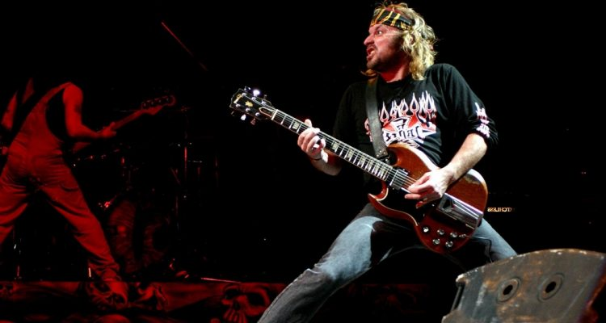

La Renga
La banda se forma en el año 1987 en la provincia de Buenos Aires, integrada por Chizzo, Locura, Tete y Tanque.
Por Franco Colucci
EL CAMINO A
LA
GLORIA
En 1988 hacen sus primeros recitales y en el ´89 graban “Esquivando Charcos” que sale a la venta recién en 1991; (Locura decide alejarse de la banda, por lo que Chizzo queda como primera guitarra); de manera independiente en 1994 se edita “Adonde me lleva la vida” y luego de mucho esfuerzo llenan su primer Obras.
Al año siguiente lanzan “Bailando en una pata”, disco que contiene versiones en vivo grabadas en Obras, del primer álbum.
A fines de 1996, con Ricardo Mollo como productor, sale “Despedazado por mil partes”, este trabajo tuvo gran aceptación por parte del público y con él se abren las puertas para la primer gran gira.
Contar uno por contar, cuenta cualquier historia, pero quién puede alto trepar, por las ramas de la memoria
LA RENGA
Contar uno por contar, cuenta cualquier historia, pero quién puede alto trepar, por las ramas de la memoria
LA RENGA
En septiembre de 1998 surge el nuevo disco sin título, conocido por la estrella blanca sobre un fondo negro. En poco menos de una semana se convirtió en Platino y fue presentado en el Estadio de Atlanta ante 48 mil personas y con una gira por el interior del país que consistió en 22 shows y culminó un año después.
En 1999 salió a la venta su sexto álbum, “La esquina del infinito”. Contiene 11 temas entre los que se encuentran “En el baldío”, “El Rey de la triste felicidad” y “Al que he sangrado”.
En septiembre del 2001 editaron el disco “Insoportablemente vivo”, conjuntamente con una película del show de Huracán. El film se estrenó el 7 de septiembre y se dio en tres funciones diarias durante dos semanas en el Cine Lorange.
Regresan al estudio de grabación y hacia fines del año 2003 sacan a la venta “Detonador de sueños”, álbum compuesto por 12 temas que presentan oficialmente ante un masivo público cada vez más hambriento de La Renga en el estadio de River.
Grabado y mezclado en el propio estudio de la banda y masterizado en el Estudio del Abasto, “Truenotierra” (2006) es un disco doble cuyo primer corte de difusión se titula “Oscuro diamante” y sale a la venta el 12 de diciembre.
En 2010 editan “Algún Rayo”, manteniendo la esencia de La Renga; el álbum es temático, ya que todas las canciones mencionan algún aspecto del universo.
En 2011, la banda emprende una gira por toda Argentina y países vecinos presentando “Algún rayo”. En el show que La Renga brindó el 30 de abril en la ciudad de La Plata, un espectador encendió una bengala e hirió de muerte a otro fan. Solidariamente, la banda decidió suspender momentáneamente todas sus presentaciones, para finalmente retomar la actividad el 15 de octubre en Jesús María, provincia de Córdoba.
En noviembre de 2014 adelantan su nuevo álbum “Pesados Vestigios”, presentando dos canciones: “Corazón Fugitivo” y “Mirada de Acantilado”. El álbum de 11 canciones salio a la venta el 17 de diciembre del mismo año.